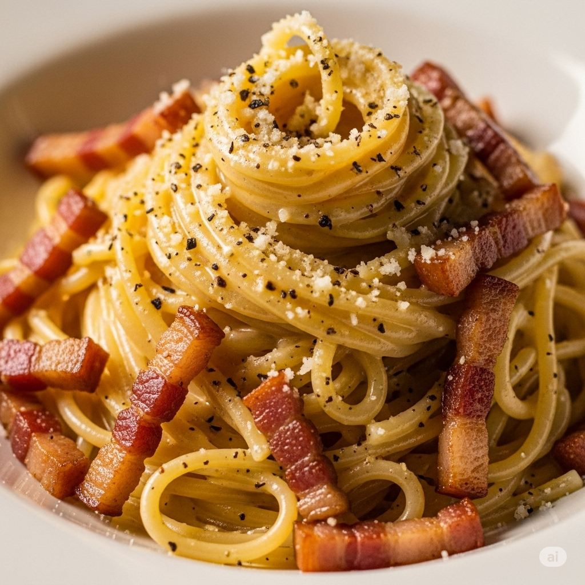

Spaghetti carbonara
Home

Description
Spaghetti carborara. One of the most famous pasta dishes
Ingredients
- Eggs
- Guanciale
- Pecorino cheese
- Spaghetti
- Black pepper
- Salt
Steps
- Cut guanciale in small cubes and put it in a pan until they are coocked. Reserve
- Grat the pecorino cheese
- Boil the spaghetti in abundant water with salt. Leave them "al dente"
- In a bowl mix the eggs (one per person), the grated pecorino, and the pepper
- Add some water from the spaghetti to obtain the desired consistency of the sauce
- When ready, pour the spaghetti and remove to incoporate the sauce
- Serve the spaghetti and add some guanciale and some more cheese on top